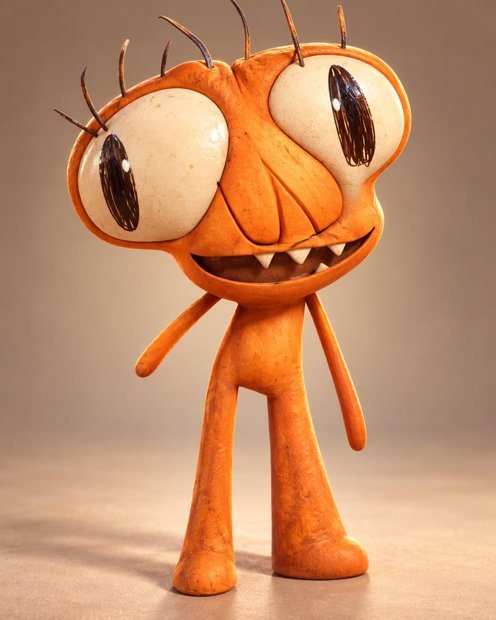
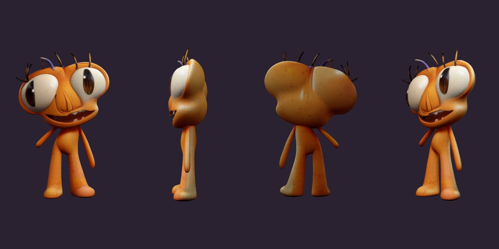
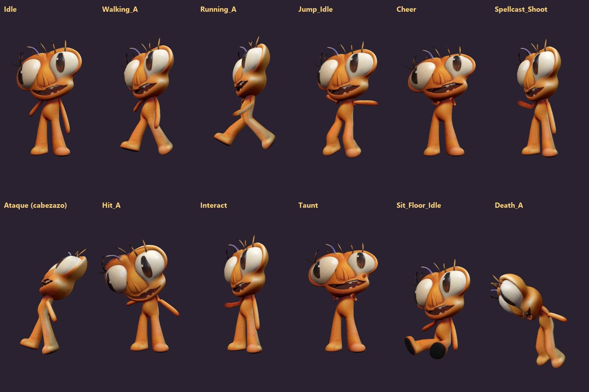
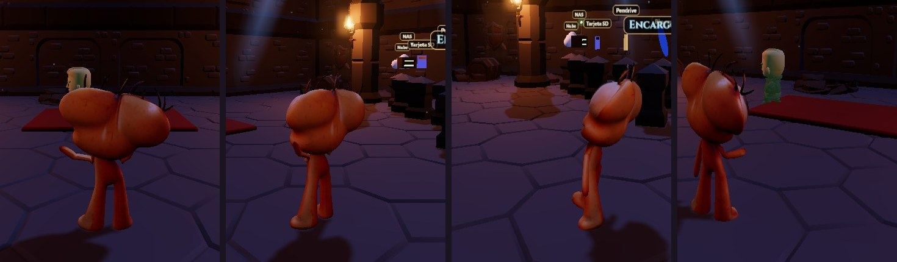

El monstruo naranja: de un dibujo plano a un modelo 3D con esqueleto, 16 animaciones y su propio ataque, en la sala de equipo junto al Encapuchado, la Pícara, el Caballero y el Bárbaro.

Una IA de «imagen a 3D» adivina la forma completa del monstruo, por delante y por detrás, a partir de la foto. Después, unos scripts propios le ponen huesos para que se pueda doblar, le dan movimientos con los mismos nombres que ya usa el juego y lo guardan como un archivo GLB que el juego carga igual que a los demás personajes.
Los modelos de imagen a 3D que se pueden instalar en casa (TripoSR, Hunyuan3D, TRELLIS) necesitan varios GB de memoria y una tarjeta gráfica potente, y este portátil no tiene GPU. La solución fue no instalar nada:
Los Spaces de Hugging Face tienen detrás una aplicación Gradio. Su página web habla con el servidor mediante una cola: se apunta uno a ella (/queue/join) y escucha los resultados por un flujo de eventos (/queue/data, SSE). El script generar_3d.py imita ese protocolo con urllib: abre una sesión, sube la imagen, pide preprocess_image (quita el fondo) y generate_and_extract_glb (forma + textura), y descarga el GLB.
python generar_3d.py monstruo_referencia.jpg monstruo_trellis.glb Abriendo sesión… → Subiendo la imagen… → Quitando el fondo… → Generando forma + textura… Listo en 25 s -> monstruo_trellis.glb (1,6 MB: 9.993 vértices, 15.754 caras, textura 1024 px)
Un GLB es glTF en binario: un bloque JSON que describe la escena y un bloque BIN con los números. glb_a_obj.py lee los dos, saca posiciones, coordenadas de textura (con la V invertida, porque glTF y OBJ la cuentan al revés) e índices, y escribe monstruo.obj, monstruo.mtl y monstruo.png. El OBJ es el formato universal, el que abre cualquier programa 3D. Pero no admite huesos ni animaciones, así que el juego carga un GLB.

Para poner huesos hay que saber dónde están las articulaciones. analizar.py corta la malla en rodajas de 2,5 cm de alto y, en cada una, busca los huecos de más de 2 cm a lo largo del eje x. Así se distinguen las piezas separadas:
| Altura (y) | Lo que se ve en la rodaja | Conclusión |
|---|---|---|
| −0,50 a −0,23 | dos grupos: x∈[−0,13; 0] y x∈[0,04; 0,22] | dos piernas; la rodilla, hacia −0,36 |
| −0,33 a −0,08 | grupos estrechos a los lados del tronco | dos brazos finos, de distinto largo |
| −0,22 a −0,05 | un solo grupo de unos 18 cm | tronco; la cadera, en −0,215 |
| −0,04 a 0,50 | un grupo de más de 60 cm de ancho | la cabezota (7.275 de los 9.993 vértices) |
construir_rig.py crea 13 huesos: raíz, cadera, tronco, cabeza, dos tramos por pierna y dos por brazo. En las manos añade los puntos handslotr/handslotl, que es donde el juego cuelga la varita. Luego decide qué hueso mueve cada vértice (pesos de piel):
Cada animación es una función matemática del tiempo: para cada instante devuelve el giro de cada hueso (en grados, que luego pasan a cuaterniones) y un desplazamiento de la cadera para los botes. Se muestrea a 24 fotogramas por segundo y se guarda dentro del GLB. Al andar, por ejemplo, las piernas oscilan con seno y las rodillas solo se doblan hacia atrás; los brazos van a contratiempo y la cadera rebota dos veces por ciclo. Lo importante es que se llaman igual que en los personajes de KayKit, así que el jugador, los compañeros en equipo y las cinemáticas los usan sin tocar su código.

| Archivo | Cambio |
|---|---|
| assets/modelos/monstruo.glb | el modelo final: malla, textura JPEG, 13 huesos y 16 animaciones (0,95 MB) |
| js/personajes.js | una entrada nueva, Monstruo, sin paleta (trae su propia textura; los demás usan la paleta oscura común) |
| js/armas.js · ataques.js · audio.js | un quinto tipo de ataque, el cabezazo mordedor: corto (2,1 m) y rápido, con chispas naranjas y un «ñam» sintetizado |
| herramientas/monstruo/ | los scripts, el OBJ, el visor y este documento, para poder repetirlo con otra imagen |

cd herramientas/monstruo python generar_3d.py mi_imagen.jpg modelo.glb # 1 · IA en Hugging Face (gratis) python glb_a_obj.py modelo.glb modelo.obj # 2 · OBJ universal python analizar.py modelo.glb # 3 · medir: dónde poner los huesos python construir_rig.py modelo.glb ../../assets/modelos/nuevo.glb # 4 · huesos y animaciones
En el paso 4 hay que copiar las medidas del paso 3 en la tabla HUESOS: cada personaje tiene su cuerpo. Funciona mejor con imágenes de cuerpo entero, de frente, con brazos y piernas separados del tronco y sobre un fondo liso. Herramientas: TRELLIS (Microsoft, MIT) en Hugging Face · Python 3.11 + numpy + Pillow · Three.js 0.170 · Chrome sin ventana para este PDF.